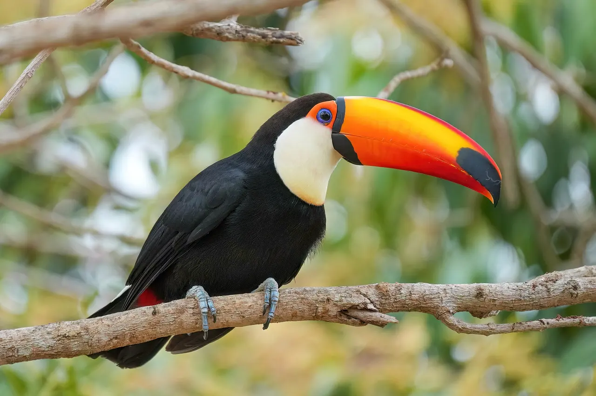

Curso de ornitologia · para quem nunca estudou aves
Ornitologia do zero
Começamos por uma pergunta simples, o que é uma ave, e chegamos ao esqueleto, ao voo e aos bicos, sempre com espécies brasileiras.

A trilha
Sete módulos, do básico à especialização
0 aulas concluídas
Todas as 32 aulas estão prontas. O módulo 7 é uma especialização em cacatuas.
Como funciona
Cada aula cabe em uma leitura
- Uma ave por aula. Uma espécie brasileira serve de exemplo para o assunto do dia.
- Toque para explorar. Fotos e desenhos com pontos clicáveis explicam cada parte.
- Palavras novas explicadas. Termos técnicos aparecem sublinhados e abrem uma definição curta.
- Teste rápido, sem nota. Três perguntas no fim, com explicação da resposta.